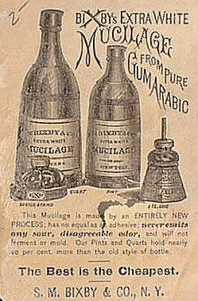

Friday, July the 30th, 2004
back to: title, date or indexes
Another thing that was mentioned yesterday—in the quotation from Mr Bangs—was a phosphorescent mucilage bottle. This important item of stationery is never far from my thoughts, nor should it be from yours. I am uncertain as to the phosphorescent quality of Bixby's mucilage—if indeed it is luminous at all—but of course there is nothing to stop you customising it. Given a lick of luminous paint, this splendid item would lend a certain dash to the meanest escritoire.

Oh, that reminds me. We have a souvenir bottle of Ayn Rand “Fountainhead” Mucilage to give away. Just answer the following question, and the first correct answer received will win. Bear in mind that it will hardly be our fault if the bottle gets lost in the post.
If a flap is protruding from a spindle in the headquarters of a deranged criminal mastermind, why can you hear the faint sound of a plunging dirigible?